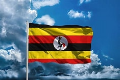

KASAGGA FRANK
About Me

My name is Kasagga Frank a student at BYU Idaho. I am originally from Uganda, a beautiful country in East Africa. I am passionate about web development and eager to learn more about dynamic web technologies through this course. In my free time, I enjoy reading, hiking, and exploring new places. I look forward to connecting with my classmates and sharing our learning experiences together.
Uganda My Country
Uganda, often called the “Pearl of Africa,” is a vibrant East African country known for its stunning landscapes, rich biodiversity, and warm, welcoming people. It boasts diverse ecosystems, from the snow-capped Rwenzori Mountains to the vast wetlands of Lake Victoria, Africa’s largest lake. Uganda is famous for its wildlife, including the rare mountain gorillas found in Bwindi Impenetrable Forest. Its cultural heritage is equally rich, with over 50 ethnic groups, each contributing unique traditions, music, and dance. Despite challenges, Uganda continues to grow economically and socially, making it a fascinating blend of natural beauty and cultural vitality.